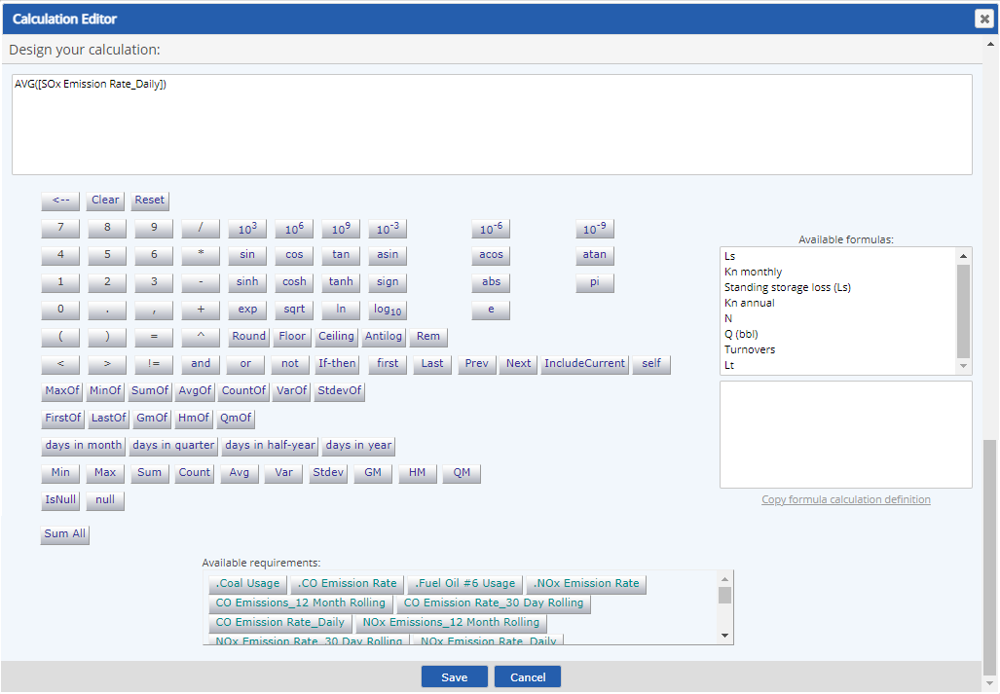

This calculator is used for all Numeric Requirements, except for the Calculated requirement type. For Calculation Builder for Calculated requirement type, see the Calculator Editor.
The calculation builder is available to aid in building formulas for calculated fields. The calculator is accessed via a calculator button.
A number of standard functions are available as buttons on the calculator. Functions available depend on the type of calculation. Some extended functions may also be used by entering the proper syntax in the formula window.
By default, the calculator displays buttons for all numeric requirements under the same parent object. To use requirements from other parts of the system model, you will need to add them to the Calculation Requirements from the requirement Properties Edit page before opening the calculator.

In addition to requirements, if a calculation template is applied to the immediate parent object, the fields on the calculation template will be available for use in the formula as calculation UDFs (user-defined fields). In the Available Parameters box, they appear alphabetically after the Calculation Requirements. When added to the formula, they take the prefix UDF_.